2023 - 2026 우리 이야기
찬양이
좋아서
모인 청년들
왜 우리가 여기 모였는지의 이야기
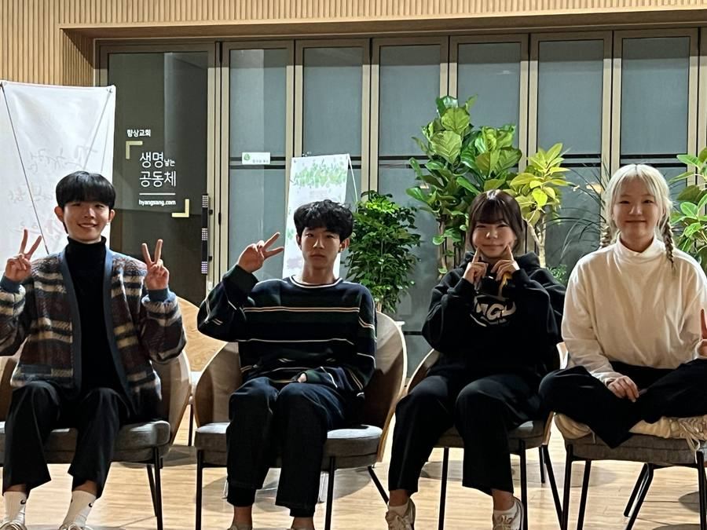
01. 준비
지금 우리는 너무 빠르게
변하는 시대를 살아가고 있습니다
세상은 점점 더 빠르게 움직이고,
우리의 시선은 자연스럽게
눈에 보이는 것들로 향합니다.
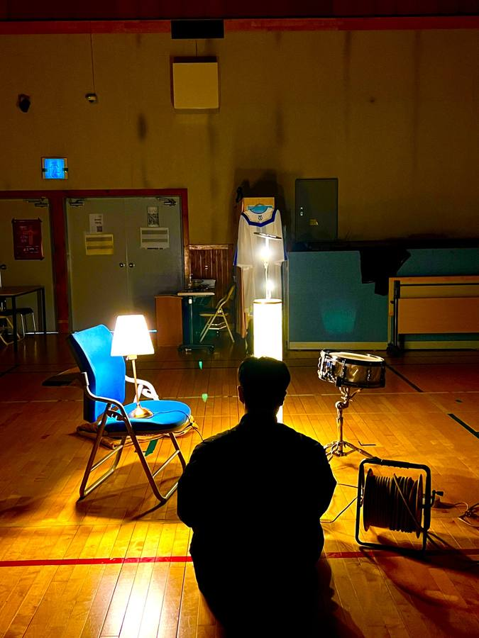
02. 고민
그러다 문득
이런 생각이 들었습니다
이렇게 바쁜 세상 속에서
우리는 하나님을
너무 쉽게 잊고 살아가고 있는 것은 아닐까.
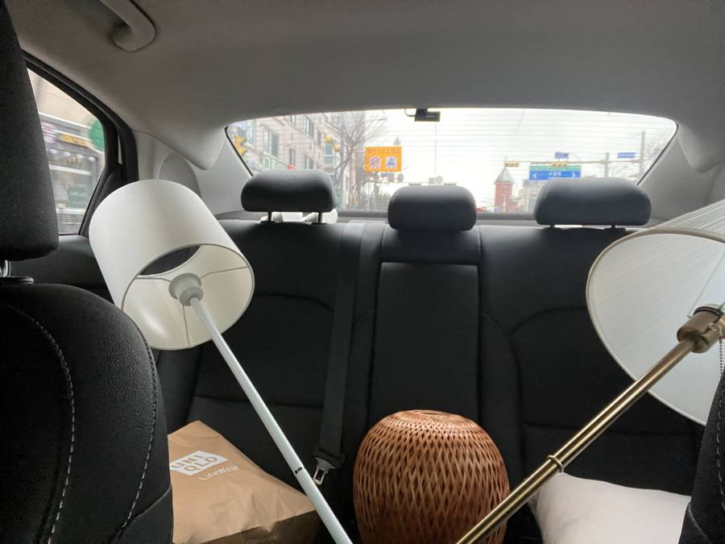
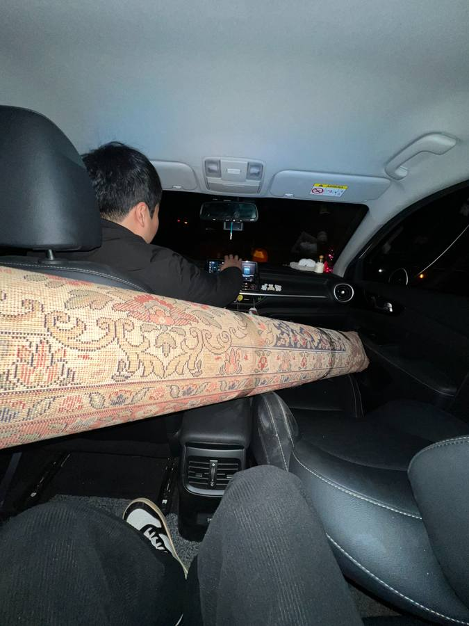
03. 결심
특히 청년들이
하나님을 향한 찬양을
점점 잃어버리게 되는 것은 아닐까
그래서 우리는 시작했습니다.
조명을 직접 구하고, 악기를 날랐습니다.
아무것도 없었지만, 마음은 있었습니다.
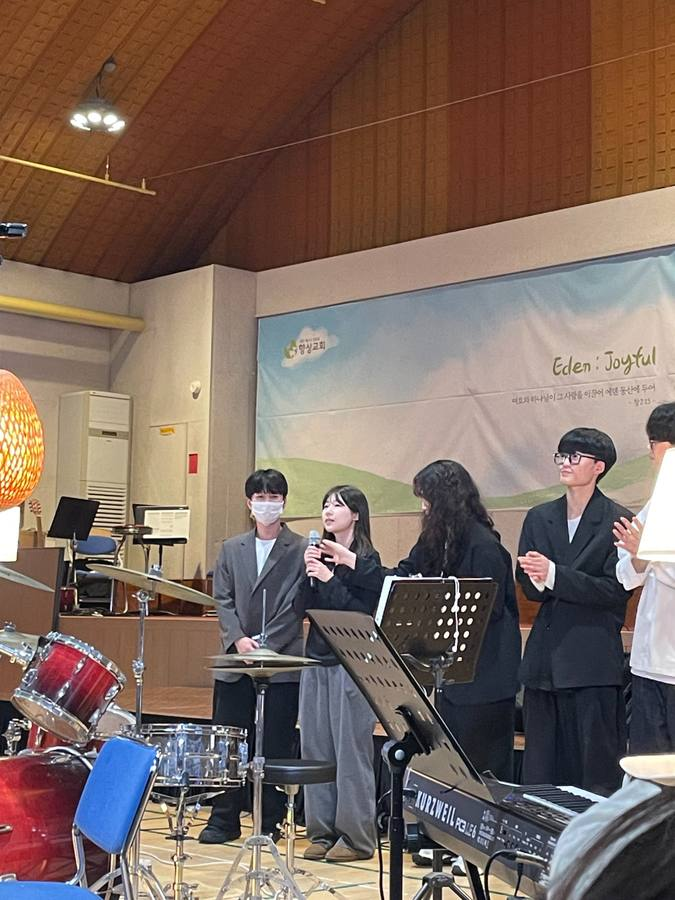
04. 작은 시작
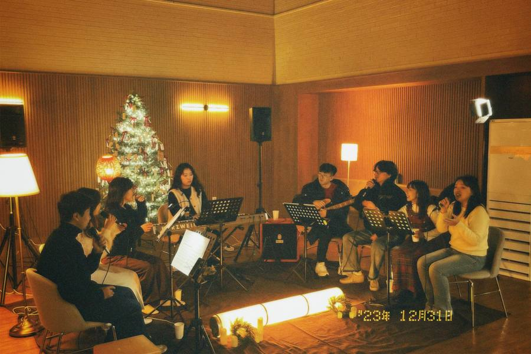
05. 찬양이 시작됨
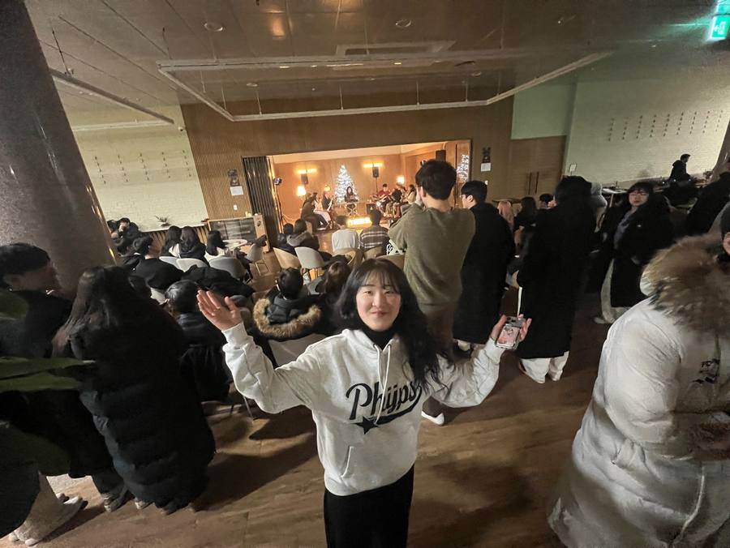
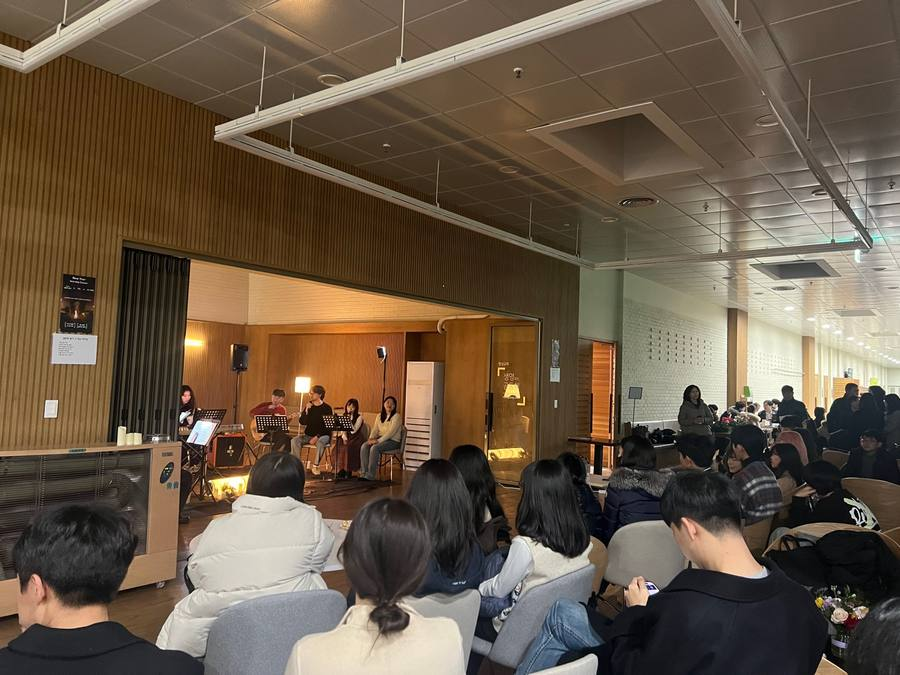
06. 함께


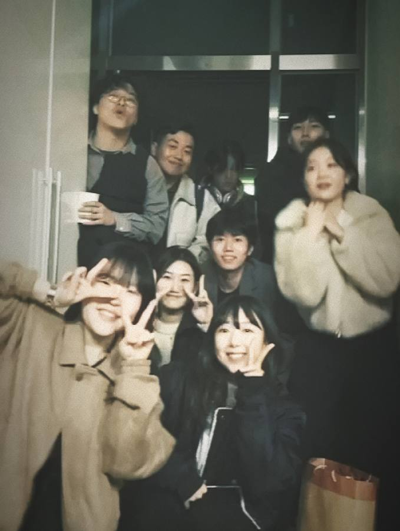
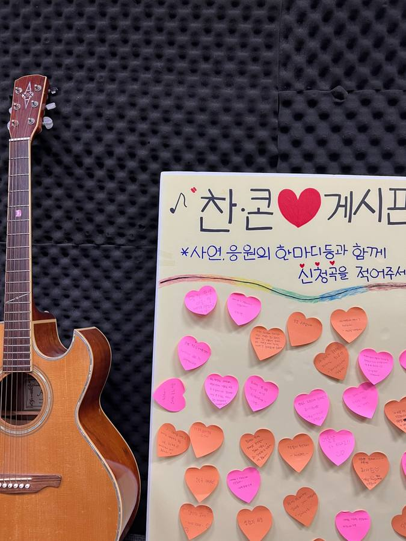
07. 공동체
우리는 믿습니다
이 작은 시작이 다시 하나님을 바라보는 시간이 되고,
찬양하는 청년들이 더 많아지는 시작이 되기를.
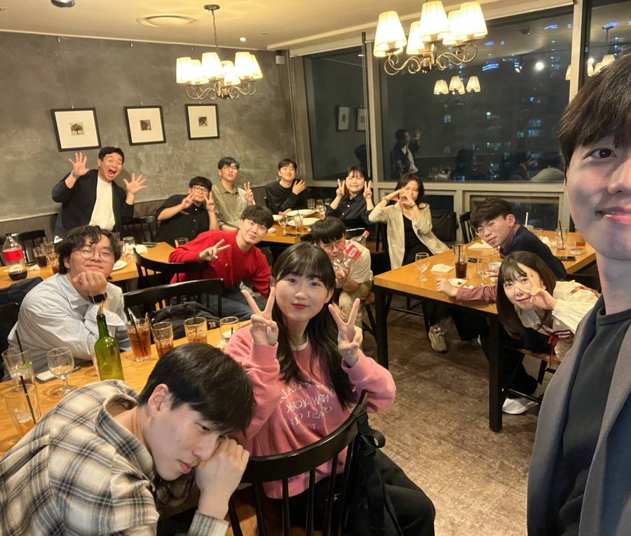
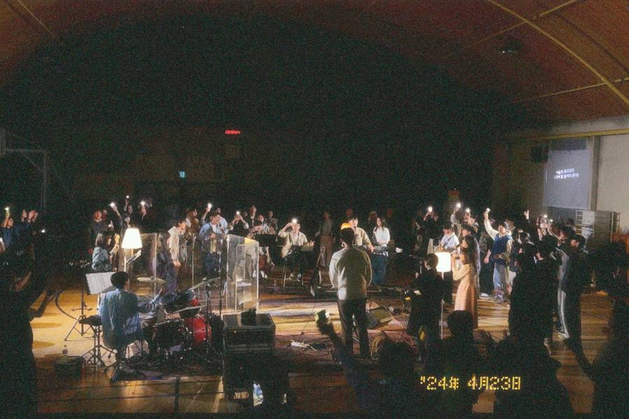
08. 더 큰 울림
우리의 찬양이
세상 가운데
울려 퍼지기를
바랍니다
우리가 붙드는 말씀
함께 지어져 가네
그의 안에서 건물마다 서로 연결하여
주 안에서 성전이 되어가고
너희도 성령 안에서
하나님의 거하실 처소가 되기 위하여
예수 안에서 함께 지어져 가느니라
에베소서 2장 21-22절